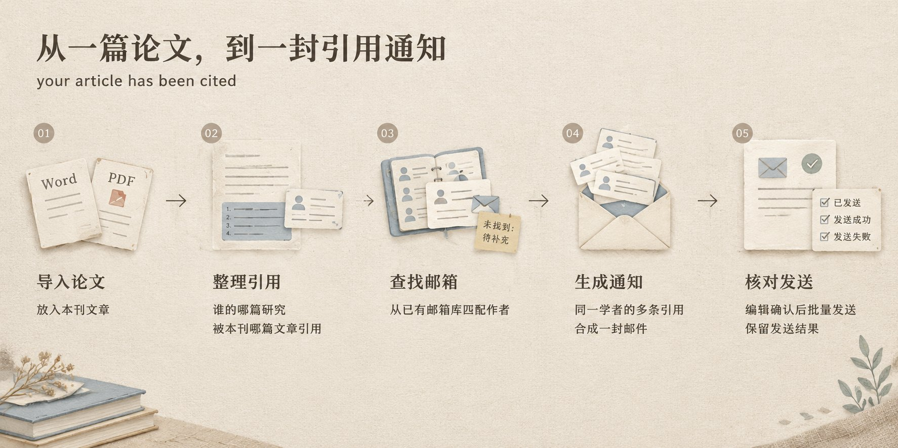
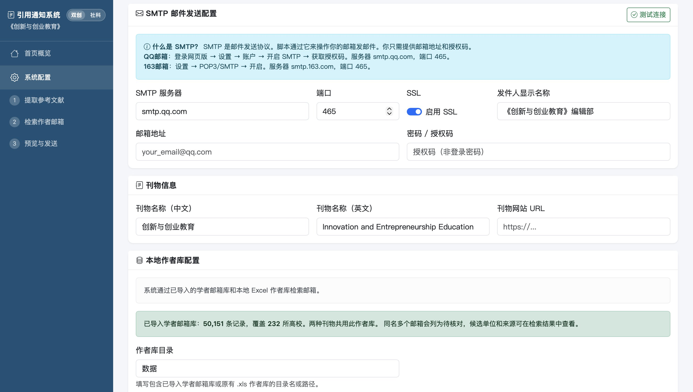

三月份的某一天，有人向某期刊单位推销一套论文引用通知系统，单位挺感兴趣，但报价很高。
那时候，我刚用上 Claude Code 不久，正处在特别想创造点什么、开发点什么的阶段。脑子里冒出一个想法，就忍不住想试试能不能把它做出来。
正好碰上这么一个现成的需求，我决定把这个活接下来。
这个东西的工作原理很简单：一篇论文后面会列出参考文献，说明它引用了哪些人的哪些研究。期刊把文章发表出来以后，可以给这些被引用的学者发一封邮件，告诉他们：您的研究成果被我们刊物上的文章引用了。
比如，张三老师写过一篇论文，后来被我们期刊新发表的李四老师的一篇文章引用。系统就给张三老师准备一封通知，把他的论文题目、引用它的文章题目和作者列清楚，让他知道自己的研究又被谁用到了。
对学者来说，这封邮件带来的是与自己研究有关的消息。对编辑部来说，这也是一次和相关领域学者建立联系的机会。对方可能因此点开文章，看看这本期刊，以及自己的研究在什么地方被引用。
所以我能理解，为什么单位会对这种产品感兴趣。
至于它的运行逻辑，把编辑原本要手动做的事情顺着排一遍，基本就清楚了。
先把期刊文章的 Word 或 PDF 文件放进去。系统从里面找出参考文献，整理出被引用的论文题目和作者，同时记住这些文献是被本刊哪篇文章引用的。
接着，拿这些作者的名字，到已有的学者邮箱库里查找联系方式。找到了，就把作者、邮箱和对应的引用信息放在一起；没找到的，留出来，后面再补。
然后，根据这些信息生成邮件。称呼谁、他的哪篇文章被引用、引用来自本刊哪篇文章，都按实际情况填进去。同一位学者有多条引用信息，也可以合在一封邮件里。
编辑先看预览，核对收件人和内容，确认无误后再批量发送。哪些发成功了，哪些没成功，也会留下记录。
整个过程就是这样。

如果全靠人来做，就得一条条看参考文献、查作者、找邮箱，再把论文题目复制到邮件里。我的产品就是把这几步接起来，让编辑可以在一个页面里完成。
说实话，这套逻辑大家都能想明白。有了 Claude Code，开发本身也真没什么难度。把要处理的文件、要整理的信息、最后要发出的邮件讲清楚，就可以往下做了。

但顺着这个流程走一遍，就会发现，里面有一个前提是必须的，也是真正有壁垒的：我去哪找这些学者的邮箱咧？
这才是这个项目里真正有难度的部分：如何收集到学者的邮箱，并且让它对应到正确的人。
下一篇，我会单独讲讲这件事。
我做好demo之后就立即找到了该期刊，演示后他们表示了很强的兴趣，这是目前我距离距离成交最近的一个产品，现在等软件著作权，有了之后大概就可以成交。